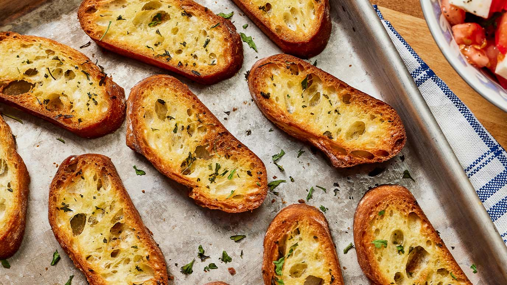

Olive oil and oregano toast

Description
Olive oil and oregano toasts is a quick, easy and tasty snack. It will also help you get rid of stale (stale, not moldy!) bread.
Ingredients
- bread - preferably bread that doesn't taste too sweet and isn't too soft, as that will make it hard to cut into thin-ish slices.
- good quality olive oil
- oregano
- salt
Steps
- Cut your bread into thin-ish slices.
- Put some olive oil on each toast. Don't drench them, but also don't leave them too dry.
- Salt them and put some oregano on top.
- Put them in the oven at medium heat for around 10 minutes.
- Enjoy!
Go back to the main page.